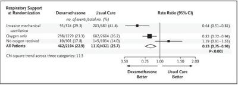
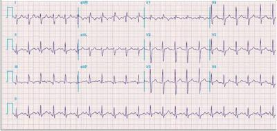
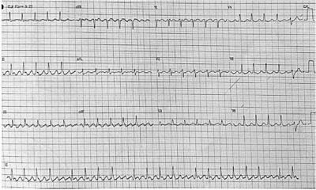
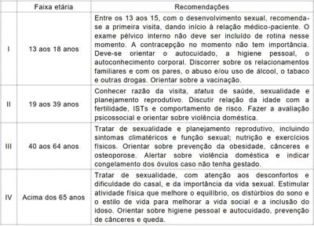
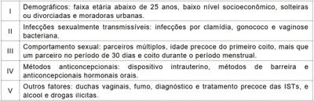

Questão 1 · Medicina Preventiva · Atributos gerais da Atenção Primária à Saúde APS · 4000140704Médico está atendendo numa Unidade de Pronto Atendimento (UPA) e chega para consultar um paciente de 50 anos, casado, professor de educação física. Após entrevista clínica, identi ca-se, no paciente, um quadro de depressão maior, episódio agudo, sem sintomas psicóticos ou ideia suicida. Considerando a Rede de Atenção Psicossocial (RAPS) do SUS, o ponto de atenção para o qual esse paciente deve ser encaminhado a fim de realizar acompanhamento e tratamento é
A o Serviço Hospitalar de Referência.
B o Centro de Atenção Psicossocial II.
C a enfermaria de hospital geral.
D a Unidade Básica de Saúde.
Revisar: possível letra faltando em enunciado
Questão 2 · Política Nacional de Atenção Básica PNAB · 4000140703A Portaria Nº. 2.436 e seu anexo, do Ministério da Saúde, de 21 de setembro de 2017, regulamenta a Política Nacional de Atenção Básica. De acordo com essa Portaria, pode ser considerada atividade do Agente Comunitário de Saúde, a ser realizada em caráter excepcional, assistida por pro ssional de saúde de nível superior, após treinamento específico e fornecimento de equipamentos adequados:
A realizar procedimentos como administração de medicamentos, vacinas e coleta de material para exames.
B realizar aplicação de insulina, inclusive no domicílio, para o tratamento dos casos diagnosticados de diabetes mellitus.
C realizar aferição de pressão arterial, inclusive no domicílio, com o objetivo de promover saúde e prevenir doenças e agravos.
D realizar ações de promoção e prevenção em saúde bucal para as famílias, grupos e indivíduos, mediante planejamento local e protocolos de atenção à saúde.
Questão 3 · Principais medidas de f requência de doenças · Medicina Preventiva · Medidas de saúde coletiva · 4000140702Conforme Boletim Epidemiológico Nº. 184, de 2020, da Secretaria Estatual de Saúde do Rio Grande do Norte-RN (disponível em: https://portalcovid19.saude.rn.gov.br/wp-content/uploads/2020/04/184-boletim-covid_06_10_20-1-1.pdf), o RN, até o dia 6 de outubro de 2020, apresentou 71.043 casos confirmados e 2.406 óbitos registrados de Covid-19. A população estimada pelo IBGE para o RN, em 2020, é de 3.534.165 pessoas. Considerando essas informações, em relação à Covid-19, o Rio Grande do norte tem, aproximadamente, uma taxa de
A mortalidade de 20 por 100.000 habitantes.
B mortalidade de 3,4 por 100.000 habitantes.
C letalidade de 0,68%.
D letalidade de 3,4%.
Questão 4 · Valor Preditivo Positivo · 4000140700Considere um hipotético teste sorológico (IgM/IgG) para Covid-19 com sensibilidade de 100% e especi cidade de 95%. Sendo testado um grupo de 1000 pessoas, com uma prevalência da doença de 4%, confirmada por um teste padrão, a probabilidade de um paciente com esse teste sorológico positivo ter a doença (valor preditivo positivo) é de
A 95%.
B 50%.
C 83%.
D 45%.
Questão 5 · Medicina Preventiva · Epidemiologia · Medidas de Associação e Medidas de Impacto · 4000140699Em um ensaio clínico randomizado publicado no NEJM (DOI: 10.1056/NEJMe2024638), foi avaliado o uso da dexametasona em pacientes hospitalizados com Covid-19, comparado ao cuidado habitual, no impacto da mortalidade em 28 dias. A figura abaixo evidencia as medidas de impacto com seus intervalos de con ança em diferentes subgrupos e no conjunto de todos os pacientes. Com base nos achados desse estudo, o uso de dexametasona na Covid-19, comparado ao cuidado habitual, reduz mortalidade em 28 dias de

A 19% em pacientes que não recebem oxigênio.
B 82% em pacientes que utilizam somente oxigênio.
C 36% em pacientes com ventilação mecânica invasiva.
D 83% em todos os grupos de pacientes.
Questão 6 · Medicina Preventiva · Comunicação Relação MédicoPaciente · Relação MédicoPaciente · 4000140697Ao abordar pacientes com doenças crônicas não transmissíveis, como a diabetes mellitus, por exemplo, o médico de família se depara, muitas vezes, com indivíduos assintomáticos que negligenciam o seu tratamento. Entre os componentes do método clínico centrado na pessoa, o que, inicialmente, melhor auxiliará o médico na abordagem a esse indivíduo será
A fortalecer a relação médico-pessoa.
B promover promoção e prevenção à saúde.
C explorar a doença e a experiência da pessoa com a doença.
D ser realista.
Questão 7 · Doença Inf lamatória Pélvica · 4000140696Mulher, usuária de DIU de cobre há quase 10 anos, comparece à consulta na unidade de saúde com queixa de dor pélvica e corrimento vaginal. Ao exame, apresenta dor no hipogástrio, dor à palpação dos anexos, dor à mobilização do colo uterino, além de hiperemia cervical e secreção vaginal anormal, sem outros sinais ou sintomas. Ao exame ultrassonográ co, não apresenta sinais de abscessos, e o DIU está normoposicionado. Nesse caso, a conduta mais adequada é
A retirar DIU imediatamente e seguir com tratamento para DIP.
B iniciar tratamento para DIP e retirar DIU após tratamento.
C encaminhar para tratamento intra-hospitalar.
D tratar cervicite e não precisa retirar o DIU.
Revisar: possível letra faltando em enunciado
Questão 8 · Medicina Preventiva · Medicina de Família e Comunidade · 4000140695A queixa de dor é extremamente frequente em ambulatórios de atenção primária à saúde. Sua classificação auxilia o médico de família no manejo adequado. Sendo assim, uma paciente depressiva que apresenta dor devido a uma tendinopatia de punho, sem conseguir segurar objetos adequadamente, apresenta dor do tipo
A nociceptiva.
B neuropática.
C psicogênica.
D mista.
Questão 9 · Manif estações Clínicas · 4000140693Homem de 50 anos de idade apresenta-se à consulta na unidade básica de saúde com exames laboratoriais evidenciando anemia hipocrômica e microcítica. Para a investigação diagnóstica dessa situação, é importante solicitar
A pesquisa de sangue oculto nas fezes, para excluir doenças do trato gastrointestinal.
B colonoscopia, para excluir neoplasia dos cólons.
C dosagens de ferro, vitamina B12 e ácido fólico, para excluir anemias carenciais.
D eletroforese de hemoglobinas, para excluir causa falciforme.
Questão 10 · Atributos gerais da Atenção Primária à Saúde APS · 4000140692Em uma consulta na unidade básica de saúde do interior do estado, o médico recém-chegado da capital se depara com uma paciente que se queixa de um “farnezim no bucho” que acredita ser decorrente de um “quebranto” colocado pela vizinha. Diante dos princi da
A orientação familiar.
B longitudinalidade.
C coordenação do cuidado.
D competência cultural.
Questão 11 · Políticas de Saúde do Sistema Único de Saúde · Medicina Preventiva · Sistema Único de Saúde SUS · 4000140691A educação popular é um instrumento que possibilita a abordagem integral na assistência à saúde. Ela parte da concepção de que todas as pessoas têm saberes e experiências acumuladas. Por isso, as ações educativas fundamentais nesse pressuposto devem
A valorizar o conhecimento científico e tradicional, reforçando a importância de ações individuais.
B construir um saber dialogado e participativo, fortalecendo o protagonismo social das pessoas envolvidas.
C repassar o saber biomédico para a população, identificando, de forma objetiva, as patologias individuais.
D reforçar o conhecimento dos profissionais de saúde, valorizando o papel professoral da equipe.
Questão 12 · Política Nacional de Atenção Básica PNAB · 4000140690A organização da agenda é parte essencial da gestão e da organização do processo de trabalho em uma unidade de saúde. Tradicionalmente, a organização da agenda ocorre por meio da distribuic atendimentos. Em contraponto a esse modelo, diversas unidades de saúde passaram a adotar uma agenda que possibilita o acesso do paciente no momento de sua necessidade ou escolha, reduz a demanda reprimida e amplia o acesso do usuário ao serviço. Esse acesso é também denominado de
A acesso aberto.
B acesso ampliado.
C acesso facilitado.
D acesso avançado.
Questão 13 · Atenção Primária à Saúde APS no Brasil · 4000140689Um residente do Programa de Residência de Medicina de Família e Comunidade foi deslocado para realizar um estágio numa unidade de saúde pertencente à zona rural do município. Surpreendido pelo menor quantitativo de população adscrita na área, o residente também percebeu diferenças na demanda (frequência e pressão assistencial), que são distintivos desse tipo de território e se caracterizam por
A alta frequência e alta pressão assistencial.
B alta frequência e baixa pressão assistencial.
C baixa frequência e baixa pressão assistencial.
D baixa frequência e alta pressão assistencial.
Questão 14 · Grupos Balint · 4000140687É cada vez mais comum o aparecimento de transtornos emocionais e mentais atualmente na sociedade, inclusive entre os pro ssionais da saúde. O cuidado contínuo e a vigilância sobre sinais e sintomas relacionados à saúde mental desses trabalhadores é fundamental para a sua qualidade de vida e na relação pro ssional-paciente. Diante disso, considere o caso a seguir: Carina é uma médica recém-formada que começou a trabalhar na Estratégia Saúde da Família em uma cidade do interior do estado. Sempre foi muito dedicada e preocupada em dar o seu melhor a Apo s uma semana intensa de trabalho, a me ́ de turma junto a professores da faculdade, com o objetivo de relatar casos reais atendidos por eles e discutir a relac me ́ dico-paciente. Carina contou que se sentiu muito irritada com a mãe de uma crianc incomodada com o caso da crianc ou na sala de espera. Após participar do Grupo Balint, Carina cou muito interessada em estudar estratégias de abordagem comunitária para tratar da saúde mental dos seus pacientes na comunidade. Após seus estudos, concluiu que criaria um grupo de terapia comunitária junto à sua equipe. Sobre esse grupo, analise as afirmativas abaixo. I - Mesmo o Agente Comunitário de Saúde (ACS) demonstrando disponibilidade e interesse pelo grupo, este só pode ser coordenado por um profissional de nível superior, pois um ACS não tem competências suficientes para tal atividade. II - Trata-se de um grupo operativo, pois teria como objetivo compartilhar informações no sentido de construir saberes acerca dos cuidados de saúde mental. III - Pode ser um grupo homogêneo ou heterogêneo, pois o público-alvo principal são as pessoas que apresentam algum agravo em saúde mental, podendo incluir familiares e indivíduos com características diversas. IV - Quanto à estratégia de ação, pode-se considerar um grupo aberto ou fechado, a depender do cronograma estabelecido e dos objetivos de cada encontro. Entre as afirmativas, estão corretas
A II e IV.
B I e III.
C I e II.
D III e IV.
Questão 15 · Relação MédicoPaciente · 4000140685É cada vez mais comum o aparecimento de transtornos emocionais e mentais atualmente na sociedade, inclusive entre os pro ssionais da saúde. O cuidado contínuo e a vigilância sobre sinais e sintomas relacionados à saúde mental desses trabalhadores é fundamental para a sua qualidade de vida e na relação pro ssional-paciente. Diante disso, considere o caso a seguir: Carina é uma médica recém-formada que começou a trabalhar na Estratégia Saúde da Família em uma cidade do interior do estado. Sempre foi muito dedicada e preocupada em dar o seu melhor a Apo s uma semana intensa de trabalho, a me ́ de turma junto a professores da faculdade, com o objetivo de relatar casos reais atendidos por eles e discutir a relac me ́ dico-paciente. Carina contou que se sentiu muito irritada com a mãe de uma crianc incomodada com o caso da crianc ou na sala de espera. Sobre a postura da me
A reprima os sentimentos de raiva e ansiedade porque são transfere
B procure, ao reconhecer os sentimentos de contratransfere
C referencie o paciente para outro colega, pois irritabilidade faz parte dos sinais de defesa na relação médico- paciente.
D busque afastamento laboral, porque esta
Questão 16 · Medicina Preventiva · Medicina de Família e Comunidade · 4000140684O grupo, dessa vez, contou com a participação ativa de Maria. Ela falou sobre o último episódio que enfrentou em sua casa: o esposo, mais uma vez, chegou bêbado. Relatou o que fez desta vez para proteger a si e à sua lha, lembrando-se das experie aprenderam como se defender de situações de violência doméstica. Algumas delas, ale fortalecidos com outros familiares, conseguiram estabelecer ligac experie Nessa situação, o tipo de abordagem é
A terapia comunitária.
B terapia cognitiva comportamental de grupo.
C psicodrama.
D grupo de educação em saúde do tipo palestra comunitária.
Questão 17 · Política Nacional de Atenção Básica PNAB · 4000140682O pro ssional médico generalista precisa desenvolver competências para atuar diante da diversidade dos problemas frequentes na atenção primária à saúde e estabelecer rotinas de cuidado continuado aos seus pacientes na comunidade. Faz parte dessas rotinas:
A pacientes portadores de diabetes melitus realizarem anualmente a fundoscopia e o exame clínico do pé.
B pacientes com problemas de saúde mental serem submetidos a atividades de matriciamento entre a equipe da unidade e a equipe de saúde mental.
C pacientes portadores de hipertensão arterial sistêmica serem submetidos a teste ergométrico anualmente.
D pacientes que iniciaram a vida sexual serem agendadas para realização de citologia oncótica do colo uterino.
Questão 18 · Prevenção Quaternária · 4000140681A Prevenção Quaternária (P4) é um conjunto de ações que tem a nalidade de evitar danos ao paciente com riscos de supermedicalização ou intervenções desnecessárias de médicos ou de outros pro ssionais de saúde. Foi utilizada pela primeira vez em uma conferência da Organização Mundial de Médicos de Família (WONCA), em 1995, por Marc Jamoulle. Nesse sentido, é considerado exercício da P4:
A evitar prescrição de estatinas para pacientes com diabetes e doenças cardiovasculares prévias.
B realizar colonoscopias para rastreio de câncer colorretal em pessoas com idade entre 50 e 70 anos.
C evitar exames para diagnóstico de câncer de próstata em idosos acima de 70 anos.
D realizar mamografias em mulheres entre 50 e 69 anos para rastreio de câncer de mama.
Questão 19 · Políticas de Saúde para Populações Específ icas · 4000140680No contexto de atenção domiciliar, é comum o manejo de pacientes portadores de doenças crônicas e a existência de uma relação complexa destes com a pessoa responsável pelos seus cuidados. Assim, são características comumente percebidas nos cuidadores e no processo de cuidar:
A o paciente escolhe o cuidador, sendo este a pessoa que tem mais experie
B o cuidador pode ter baixa autoestima, realizar o cuidado por culpa ou necessidade de reparar algo do passado, mesmo inconscientemente.
C quando o paciente tem uma doenc
D quando o cuidador e
Questão 20 · Program Saúde da Família PSF e Estratégia Saúde da Família ESF · 4000140679A Estratégia de Saúde da Família (ESF) é considerada o principal meio de expansão, quali cação e consolidação da Atenção Primária à Saúde, por incrementar uma reorientação do processo de trabalho, com maior potencial de aprofundar os princípios da Atenção Primária. Assim, entre as funções da ESF, tem-se:
A reconhecer as necessidades de saúde da população, fornecendo um cuidado ampliado e independente dos demais pontos de atenção à saúde.
B ser resolutiva, identificando riscos, doenças, demandas de saúde e encaminhando os pacientes para os especialistas focais.
C ser a base do sistema de saúde, oferecendo serviços de saúde por meio de unidades básicas com serviço restrito aos usuários do território.
D coordenar o cuidado, elaborando, acompanhando e gerindo os planos terapêuticos das pessoas, organizando o fluxo delas na rede de atenção à saúde.
Questão 21 · Trombose Venosa Prof unda TVP · Cirurgia · 4000140676Homem de 53 anos de idade, tabagista, apresentou quadro de edema e dor no membro inferior esquerdo. Ao exame ultrassonográ co, revelou trombo agudo nas veias musculares da panturrilha e paredes espessadas e irregulares em veia femoral super cial, com debris e re uxo. Não foi encontrado nenhum fator causal na investigação clínica. Evidenciou-se apenas haver dois cordões inflamatórios endurados, um no membro inferior direito e outro no membro superior direito, nos últimos três meses, que não levaram à internação. Teve perda ponderal importante nos últimos quatro meses e constipação recente. O diagnóstico mais provável desse paciente é
A deficiência de proteína C e de proteína S.
B síndrome paraneoplásica.
C mutação para o Fator V.
D tromboangeíte obliterante.
Revisar: possível letra faltando em enunciado
Questão 22 · Tratamento · Cirurgia · 4000140675Paciente com 54 anos, diabético e hipertenso, é atendido em um serviço de urgência com quadro de dor latejante em região anal há 72 horas, tenesmo retal e surgimento de massa endurecida. O exame mostra abaulamento e hiperemia de região perianal anterolateral direita, não sendo possível realizar toque retal devido à intensidade da dor. Foram solicitados exames laboratoriais com presença de leucocitose (14.600 leuc) com neutrofilia, PCR = 104, glicemia = 400 mg/dl. Nesse caso, o provável diagnóstico e a conduta mais indicada são, respectivamente,
A síndrome de Fournier e antibioticoterapia + drenagem e desbridamento eletivamente.
B abscesso anorretal e antibioticoterapia além de correção da glicemia + compressa morna na região.
C trombose hemorroidária aguda e antibioticoterapia além de anti-inflamatório + correção da glicemia.
D abscesso anorretal e cirurgia de urgência para drenagem do abscesso + antibioticoterapia.
Questão 23 · Apresentação Clínica e Classif icação · Tratamento · Cirurgia · 4000140674A doença hemorroidária, uma das mais prevalentes da coloproctologia, pode ocorrer em qualquer idade e afetar ambos os sexos. Baseado em uma combinação de queixas do paciente e os achados do exame clínico, a doença hemorroidária pode ser classificada em estágios e, a partir disso, ser conduzida de forma conservadora ou por meio do tratamento cirúrgico. Sobre o diagnóstico e o tratamento da doença hemorroidária, analise as afirmativas abaixo. I - As hemorroidas internas são divididas em quatro graus e podem prolapsar de modo redutível ou irredutivel. II - As hemorroidas externas ocorrem no plexo hemorroidário inferior e podem ulcerar ou trombosar. III - O sangramento só ocorre nos mamilos prolapsados, durante a evacuação, pelo mecanismo de trauma. IV - Hemorroidas grau III sofrem prolapso no ânus, mas se reduzem espontaneamente após a evacuação. Das afirmativas,
A está correta III, apenas.
B está correta I, apenas.
C estão corretas III e IV.
D estão corretas I e II.
Questão 24 · Inf ectologia · Pneumotórax Simples · 4000140672Paciente acometido por Covid-19 dá entrada na UTI devido à importante hipoxemia. Após 24 horas, faz-se necessária a intubação. A seguir, o paciente apresenta enfisema subcutâneo progressivo em região de tórax, face e membros superiores. Nesse caso, o diagnóstico e a conduta adequada são, respectivamente,
A pneumotórax unilateral e observação clínica.
B pneumomediastino e toracotomia e rafia de esôfago.
C pneumotórax bilateral e drenagem torácica bilateral.
D enfisema subcutâneo isolado e colocação de jelco no 2º espaço intercostal.
Questão 25 · Hemotórax · Cirurgia · 4000140671Piloto de moto é levado ao pronto-socorro após colidir com um carro. O paciente apresenta diversas escoriações pelo corpo, com queixa de dor torácica importante. Realizada TC de tórax, evidenciam-se derrame pleural bilateral e fratura de múltiplas costelas à esquerda. Paciente segue sem queixas respiratórias. Para esse caso, a conduta adequada é
A drenagem pleural bilateral.
B observação clínica por 24 horas.
C alta hospitalar com repouso e analgesia.
D toracotomia de urgência à esquerda.
Questão 26 · Queimaduras Elétricas · Cirurgia · 4000140669As queimaduras elétricas por corrente de alta tensão (>1000V) constituem traumas graves, com grande repercussão sistêmica e alta morbimortalidade inicial e tardia, por isso requerem cuidados específicos. Entre esses cuidados, está contraindicada a
A utilização de corticosteroides para redução do edema de vias aéreas.
B realização de fasciotomias para alívio da síndrome compartimental.
C monitorização cardiovascular contínua para detecção de arritmias cardíacas.
D hidratação vigorosa e a diurese osmótica para tratamento de mioglobinúria.
Questão 27 · Princípios Básicos do Tratamento de Lesões Cortocontusas · Cirurgia · 4000140668As feridas de origem traumática da face são uma das ocorrências cirúrgicas mais frequentes nos prontos-socorros, e os princípios básicos do seu tratamento devem ser conhecidos para se obterem os melhores resultados funcional e estético, com a prevenção de complicações precoces e sequelas tardias no pós-operatório. Assim, no que diz respeito a ferimentos na face,
A uma alternativa às suturas pode ser o uso de colas teciduais em ferimentos lineares e sem contaminação, especialmente em crianças.
B a sutura é contraindicada, devendo ser deixados cicatrizar por segunda intenção, em ferimentos contaminados, como as mordeduras de animais.
C o uso profilático de antibióticos é mandatório para evitar infecção nos ferimentos corto-contusos.
D deve-se realizar amplo debridamento das bordas da feridas antes que se possa proceder à sutura.
Questão 28 · Diagnóstico · Conduta · 4000140666A drenagem do leito cirúrgico é uma importante medida na prevenção de complicações pós-operatórias como seromas, hematomas e coleções em geral. Entretanto, seu emprego deve obedecer a critérios bem estabelecidos. Um desses critérios diz respeito ao fato de
A a utilização de drenos impedir a ocorrência de hematomas em procedimentos sem hemostasia adequada do leito cirúrgico.
B os sistemas de drenagem fechada basearem-se no princípio de capilaridade, reduzindo a incidência de infecção.
C os drenos de Penrose deverem ser removidos até 24 horas após o término do procedimento cirúrgico.
D a utilização de sistemas de drenagem fechada ser mandatória quando se espera um débito elevado por um período de tempo superior a 72 horas.
Questão 29 · Cirurgia metabólica no tratamento do diabetes mellitus · 4000140665Paciente de 28 anos, sexo feminino, portadora de obesidade grau I, com Índice de Massa Corpórea (IMC) de 33 kg/m2, é diabética em uso de Metformina, glimepirida e insulina NPH, com diagnóstico há 7 anos. Sua última hemoglobina glicada, avaliada há 6 meses, é de 7,8%. Faz acompanhamento regular com endocrinologista há 4 anos. Após saber, por meio de amigos, da possibilidade de ser submetida à cirurgia metabólica (com foco no tratamento do Diabetes Tipo 2), procura o ambulatório de cirurgia bariátrica, interessada em se submeter ao tratamento cirúrgico. De acordo com o Conselho Federal de Medicina (CFM),
A a paciente em questão preenche os critérios para que possa ser submetida à cirurgia metabólica.
B o endocrinologista precisa comprovar a refratariedade da Diabetes Tipo 2 ao tratamento clínico, para a paciente ser submetida à cirurgia metabólica.
C os procedimentos utilizados com o foco de tratar o diabetes do tipo 2 podem ser tanto a Gastrectomia Vertical quanto a Derivação Gastrojejunal em Y-de-Roux.
D a cirurgia metabólica representa uma importante evolução no tratamento do paciente portador do Diabetes Tipo 2, havendo chances de levar à cura da doença.
Questão 30 · Fases da Resposta ao Trauma · Resposta Pancreática endócrina · Endocrinologia · 4000140663A resposta endócrina e metabólica ao trauma decorre de uma reação ao tratamento cirúrgico. No que se refere ao metabolismo da glicose, no pós-operatório imediato, ocorre
A hiperglicemia reacional intensa proporcional ao porte da operação.
B hiperglicemia devido à sobrecarga pancreática e à descarga de glucagon.
C hipoglicemia em razão do trauma, pois o pâncreas entrou em exaustão.
D hipoglicemia causada pelo jejum pré-operatório prolongado.
Questão 31 · Antibioticoprof ilaxia Cirúrgica · 4000140660Entre as condutas inerentes aos cuidados pré-operatórios do paciente cirúrgico eletivo, visando ao melhor resultado pós operatório, tem-se o conceito da antibioticoterapia pro lática. Um cirurgião prepara seu paciente portador de câncer do cólon esquerdo para realizar uma hemicolectomia esquerda e prescreve um esquema de antibioticoterapia profilática. Essa prescrição deve respeitar o protocolo mais aceito atualmente, que é
A iniciar o uso do antibióbico via endovenosa 3 horas antes do ato cirúrgico.
B injetar o antibiótico na indução anestésica.
C administrar cefalosporina de 1ª geração.
D começar o uso do antibiótico na cirurgia e mantê-lo por 24 a 48 horas.
Questão 32 · Complicações PósOperatórias · Cirurgia · 4000140659Nas cirurgias de grande porte, o pós-operatório é um dos maiores desa os, uma vez que quadros de choque séptico não são incomuns nessas situações. Diante de um quadro dessa natureza, deve-se estabelecer como prioridades na conduta:
A tratamento cirúrgico, tratamento da dor, tratamento da hipovolemia e reparação do desequilíbrio ácido-base.
B tratamento do distúrbio cardíaco, tratamento da infecção, tratamento da peritonite e reparação da desidratação.
C tratamento do estado hipovolêmico, tratamento da infecção, reparação do desequilíbrio ácido-base e correção do déficit nutricional.
D tratamento da insuficiência respiratória, correção do déficit nutricional, drenagem de abscessos e reposição volêmica.
Questão 33 · Fatores de Risco para Cicatrização Anormal · Cirurgia · 4000140658A cicatrização das feridas cirúrgicas envolve uma série de fatores. Para que ocorra uma cicatrização livre de infecções, o fator mais importante é a
A oxigenação da ferida.
B presença de fibronectina.
C produção de colágeno tipo I.
D ação dos fatores de crescimento.
Questão 34 · Exames de imagem · Nef rologia · Avaliação metabólica da urina · 4000140656Uma paciente de 50 anos é atendida com dor lombar bilateral e hematúria macroscópica. A ultrassonogra a revelou a presença de imagens hiperecoicas, com sombra acústica posterior, de dimensões entre 1,5 a 2 cm em todos os cálices e pelve, bilateralmente. O exame sumário de urina foi compatível com infecção do trato urinário (ITU). Nesse caso, espera-se encontrar
A uma concentração de cistina urinária elevada.
B um pH urinário mais ácido, geralmente abaixo de 6,5.
C a presença de
D a presença de oxalato e cálcio como principais constituintes do cálculo.
Questão 35 · Exames Complementares e Diagnóstico · Biópsia · Cirurgia · 4000140654Paciente de 58 anos de idade, assintomático, apresenta-se ao médico com o PSA de 4,5 ng/ml. O toque retal está normal. Realiza biópsia da próstata, cujo resultado foi normal. No ano seguinte, continua assintomático e com exame físico normal, mas o PSA está em 6,5 ng/ml. Nesse caso, deve-se
A prescrever inibidor de 5 alfa redutase e repetir o PSA.
B realizar nova biópsia de próstata.
C prescrever antibióticos por 1 mês e repetir o PSA.
D realizar uma ultrassonografia da próstata.
Questão 36 · Diagnóstico · Cirurgia · 4000140653Homem de 60 anos de idade comparece ao ambulatório com queixas de polaciúria e nictúria, incomodado por ter o sono interrompido. O escore de sintomas é 12. A história e o exame físico não trazem nenhuma informação adicional. A próstata é normal ao toque retal. Traz exame de urina com resultado normal. Nesse caso, o próximo passo na investigação é a realização de
A diário miccional.
B dosagem de creatinina.
C urodinâmica.
D cistoscopia.
Questão 37 · Segurança do Paciente · Cirurgia · 4000140651Um paciente será submetido a nefrectomia radical direita e, no hospital, aplica-se corretamente o segura da OMS. Esse cirúrgica ou Nesse caso, a ação que deve ser tomada na fase
A confirmar, com cirurgião, anestesista e enfermeiro, o nome do paciente e a cirurgia a ser realizada.
B verificar se a cefazolina foi administrada nos últimos 60 minutos antes da incisão.
C verificar a tomografia computadorizada que corrobora o diagnóstico disponível.
D confirmar se há risco de perda sanguínea maior que 500 ml e se há acesso endovenoso adequado.
Questão 38 · Úlcera péptica Perf urada · 4000140650Paciente de 44 anos, sexo feminino, com diagnóstico de artrite reumatoide, em uso de hidroxicloriquina e etoricoxibe, há duas semanas, devido à exarcebação do quadro de artralgia, procura o pronto-socorro com quadro de dor de forte intensidade no andar superior do abdome. Ao exame físico, apresenta dor e defesa em epigástrio. Exames laboratoriais demonstram 18.000 leucócitos/mm3 e Proteína C reativa = 230 mg/dl. Realiza tomogra a de abdome cuja imagem está reproduzida abaixo. A conduta mais adequada para esse quadro é

A jejum oral, hidratação venosa e analgésicos.
B laparoscopia diagnóstica e terapêutica.
C ressonância magnética do abdome para estadiamento.
D sedação anestésica para redução da hérnia.
Questão 39 · Úlcera péptica Perf urada · 4000140648Paciente de 44 anos, sexo feminino, com diagnóstico de artrite reumatoide, em uso de hidroxicloriquina e etoricoxibe, há duas semanas, devido à exarcebação do quadro de artralgia, procura o pronto-socorro com quadro de dor de forte intensidade no andar superior do abdome. Ao exame físico, apresenta dor e defesa em epigástrio. Exames laboratoriais demonstram 18.000 leucócitos/mm3 e Proteína C reativa = 230 mg/dl. Realiza tomogra a de abdome cuja imagem está reproduzida abaixo. O diagnóstico mais provável para esse quadro é

A hérnia epigástrica estrangulada.
B úlcera péptica perfurada.
C pancreatite aguda necrotizante.
D tumor desmoide da parede abdominal.
Questão 40 · COVID 19 · 4000140645Em 2020, o mundo foi acometido por uma pandemia causada pelo vírus SARS Cov-2, que causa a COVID-19, caracterizada, principalmente, por sintomas respiratórios. No entanto, sintomas gastrointestinais podem estar presentes e, inclusive, provocar um quadro de abdome agudo. Em razão disso, é importante o cirurgião saber que
A a associação entre diarreia e linfopenia sugere o afastamento do diagnóstico de COVID-19.
B a proporção de receptores da enzima conversora de angiotensina 2 nas células da mucosa intestinal é menor do que nas células dos alvéolos pulmonares.
C lesões pulmonares típicas são raras na tomografia de tórax de pacientes com sintomas gastrointestinais.
D a presença de anorexia afasta o diagnóstico de COVID-19, sugerindo apendicite aguda.
Questão 41 · Apresentação clínica · 4000140642O Brasil continua um país endêmico em hanseníase, doença relacionada a baixos índices socioeconômicos. Em relação às manifestações clínicas da hanseníase,
A na suspeita de hanseníase virchowiana, a pesquisa da sensibilidade é fundamental.
B na forma indeterminada, como primeira manifestação da doença, o acometimento sensitivo é infrequente.
C na forma dimorfa, a lesão mais típica é a mácula hipocrômica com alteração na sensibilidade.
D na forma tuberculoide, o acometimento neural é precoce.
Questão 42 · Psiquiatria · Antidepressivos · 4000140641Depressão maior é uma comorbidade frequente em pacientes portadores de doenças cardiovasculares, como hipertensão arterial, insuficiência coronariana e insuficiência cardíaca. O antidepressivo com perfil de segurança mais adequado para uso em portadores de alterações cardiovasculares é a
A duloxetina.
B amitriptilina.
C venlafaxina.
D sertralina.
Questão 43 · Bronquite crônica · Quadro clínico · Pneumologia · 4000140639Homem de 77 anos, tabagista de longa data (60 maços/ano), foi levado ao pneumologista por estar com fadiga, dispneia aos mínimos esforços e tosse produtiva pela manhã. Com esse quadro, o diagnóstico e o achado espirométrico mais prováveis para esse paciente são, respectivamente,
A enfisema e volume residual (VR) diminuído.
B doença pulmonar obstrutiva crônica e relação VEF1/CVF menor que 70%.
C asma e VEF 1 menor que 60%.
D bronquite crônica e capacidade normal de difusão pulmonar de monóxido de carbono (DLCO).
Questão 44 · Betabloqueadores · Cardiologia · 4000140638Mulher, 35 anos, obesa, hipertensa, costureira, queixa-se, ao médico, de que tem tosse seca intermitente, com piora à noite, associando-se, por vezes, à opressão torácica, e dispneia. Nega tabagismo ou etilismo. Faz uso de anlodipino 10 mg, losartana 50 mg 12/12h, pantoprazol de 20 mg e propanolol 40 mg 1 vez ao dia para tratamento de migrânea, há 2 anos. Ao exame físico, constatou-se o seguinte: BEG, eupnéica, fácies de exaustão, ausculta cardíaca sem alterações, FC 58 bpm PA 134x86 mmHg, ausculta pulmonar com sibilos expiratórios em bases, SPO2 97%, edema perimaleolar bilateral 2+/4, com piora vespertina. Com base nesse resultado, o médico conclui que as prováveis causas da tosse são
A insuficiência cardíaca com FE reduzida + asma associada à obesidade.
B doença pulmonar obstrutiva crônica (DPOC) + refluxo gastroesofágico.
C broncoespasmo induzido pelo beta-bloqueador + refluxo gastroesofágico.
D tosse secundária ao uso da Losartana + asma associada à obesidade.
Questão 45 · Tratamento e prof ilaxia · 4000140636B.S.J., 49 anos, masculino, casado, pardo, avicultor, residente e procedente de Areia/PB, procurou atendimento após sete dias de cefaleia frontal intensa, contínua de início súbito, associada a vômitos, dispneia, febre (38 ºC) e perda ponderal. Recebeu tratamento inicial com aciclovir e ceftriaxona por cinco dias, porém sem resposta. Transferido para centro especializado, fez TC de crânio que evidenciou sinais de apagamento de sulcos e giros, além de sorologias para HIV reagente e VDRL não reagente. A punção lombar mostrou LCR de aspecto turvo, e a microscopia, com tinta da China, revelou presença de microrganismos encapsulados. Baseado nos novos achados, deve-se iniciar, prontamente, o tratamento com
A anfotericina B mais flucitosina.
B meropenem.
C ganciclovir.
D sulfadiazina mais pirimetamina.
Questão 46 · Tratamento · 4000140635Homem de 55 anos, portador de insu ciência cardíaca crônica, de etiologia isquêmica, classe funcional NYHA II, comparece à consulta por apresentar quadro de febre moderada, anorexia, tosse produtiva com expectoração mucopurulenta e dor torácica à direita, há 3 dias. Os sinais vitais mostram: temperatura axilar de 37 ºC, frequência respiratória de 22 irpm, frequência cardíaca de 90 bpm e pressão arterial de 110 x 60 mmHg. No exame físico, por meio da ausculta, são detectadas crepitações finas em base do hemitórax direito. Nesse caso, o médico conclui que o paciente está com pneumonia, adquirida na comunidade, e, para tratá-la com o antibiótico adequado, deve prescrever
A amoxicilina.
B amoxicilina + azitromicina.
C azitromicina.
D amoxicilina + clavulanato.
Questão 47 · Indicações de Pesquisa e Tratamento · 4000140633A descoberta do acomete 50% da população mundial, com maior prevalência em regiões de menor nível socioeconômico e baixo saneamento. A maioria das pessoas infectadas permanece assintomática, mas uma parte desenvolverá a doença. É necessário testar e, se comprovado, tratar a infecção por Hp quando há presença de
A metaplasia intestinal, tumor estromal gastrointestinal (GIST) e úlcera duodenal.
B doença ulcerosa péptica, uso prolongado de AAS e anti-inflamatórios, e doença do refluxo gastroesofágico.
C linfoma MALT gástrico, dispepsia funcional e vários pólipos hiperplásicos.
D gastrite atrófica, câncer gástrico em parente de primeiro grau e forte desejo do paciente.
Questão 48 · Psiquiatria · Antidepressivos · 4000140631Mulher de 66 anos, com antecedente de hipertensão e dislipidemia bem controlados, além de osteoartrose de coluna cervical e joelhos, vai a uma Unidade Básica de Saúde. Durante a consulta, refere que, nos últimos anos, engordou mais de 10 kg e abandonou suas caminhadas diárias. Há seis meses, queixa-se de piora da dor em joelho direito, com impacto no seu humor e nas atividades diárias. A rma ainda que está fazendo uso de analgésicos comuns com frequência, com melhora parcial. Foi avaliada no ambulatório da geriatria e iniciado antidepressivo com ação modulatória central para dor. Nesse caso, o geriatra receitou
A bupropriona.
B duloxetina.
C mirtazapina.
D escitalopram.
Questão 49 · Hiperparatireoidismo primário · Endocrinologia · 4000140630Uma mulher de 65 anos, com antecedente de diabetes mellitus, hipertensão arterial sistêmica e hipotireoidismo, com tratamento clínico regular e bom controle pressórico e glicêmico prévios, internou-se, há 3 meses, para tratar uma fratura de fêmur direito, que teve boa recuperação. Mas, há 2 semanas, foi diagnosticada com poliúria, polidipsia, anorexia e fraqueza muscular. Atendida em um consultório de clínica médica, no nal da manhã, o médico constatou que a paciente apresentava leve desidratação e glicemia capilar de 130 mg/dL, com parâmetros vitais estáveis, orientando-a a fazer hidratação oral e adequação de dieta. Ao retornar uma semana depois de receber essa orientação, fez exames complementares, cujos resultados foram: glicemia de jejum 110 mg/dL, hemoglobina glicada 7,2%, cálcio iônico 1,5 mmol/L (VR 1,10 a 1,35 mmol/L), TSH 3,2 mU/L (VR 0,4 a 4,5 mU/L), sumário de urina com calciúria e PTH 150 pg/mL (VR 10 a 65 pg/mL). De acordo com esses resultados, a paciente foi diagnosticada com hiperparatiroidismo primário, pelo fato de que
A o osso cortical no colo do femur está preservado, com importante perda do osso trabecular, principalmente na coluna lombar.
B o carcinoma de paratiróide é o achado mais frequente no anatomopatológico das peças cirúrgicas.
C os níveis de 1,25-di-hidroxivitamina D são frequentemente altos ou estão no nível superior da normalidade.
D o tratamento clínico com reposição de vitamina D 2000 ui/dia é de primeira linha, objetivando manter a vitamina D acima de 100 ng/ml.
Questão 50 · Pneumologia · Manif estações clínicas · 4000140628Mulher, 47 anos, foi admitida, no pronto atendimento, com queixa de falta de ar e desconforto torácico. Nega alergias e não usa nenhum tipo de medicamento. À admissão, encontrava-se com ausculta pulmonar limpa, PA 120x80 mmHg, FC 110 bpm, FR 28 irpm, T 36,7 ºC e saturação de O2 96% em ar ambiente. Foi realizado ECG conforme protocolo institucional, reproduzido abaixo. Considerando o achado nesse exame, o próximo passo será realizar

A prova de função pulmonar e nebulização com beta-2 agonista.
B cineangiocoronariografia e implante de
C angio-TC de tórax e heparinização plena.
D escala de ansiedade de Beck e clonazepam 0,25 mg sublingual.
Questão 51 · Síndrome da desmielinização osmótica · Nef rologia · Diagnóstico etiológico da hiponatremia · 4000140623Um paciente de 45 anos, com quadro de náuseas, vômitos e adinamia iniciado há 1 mês, procurou, há uma semana, a unidade de pronto-socorro, na qual foi hidratado com solução de cloreto de sódio a 0,9%, e evoluiu com rebaixamento do nível de consciência. Familiares negavam que ele apresentasse dispneia ou hipotensão na ocasião. No momento do atendimento, realizaram-se alguns exames cujos resultados foram os seguintes: função renal normal, potássio sérico de 4,5 meq/L e sódio sérico de 110 meq/L. O clínico iniciou hidratação com cloreto de sódio a 513 meq/L, obtendo melhora dos sintomas, com reposição gradativa do nível de consciência e do sódio. Em seguida, foi encaminhado ao hospital universitário e, na admissão, paciente encontrava-se hidratado e normotenso. Mas, feitos novos exames, cou constatado que o sódio sérico estava 122 meq/L; o sódio urinário medido, 55 meq/L; a osmolaridade sérica, 254 meq/L e o ácido úrico, 1,7 mg/dL. A dosagem de cortisol e TSH estavam normais. Para definição etiológica, os dois exames que devem ser solicitados são
A ecocardiograma e albumina sérica.
B ressonância de crânio e tomografia de tórax.
C glicemia sérica e exame toxicológico.
D eletroforese de proteínas e lipidograma.
Questão 52 · TRALI Lesão Pulmonar Aguda Associada à Transf usão · Hematologia · 4000140621Uma mulher de 20 anos, estudante, recém-diagnosticada com leucemia linfoide aguda, está recebendo transfusão pro lática de plaquetas para uma contagem de 5.000/mm3. Aproximadamente 10 minutos após início da transfusão, a taxa de oxigênio caiu de 98% para 65%, a pressão arterial caiu de 120x60 mmHg para 80x40 mmHg. A paciente está, visivelmente, agônica com rápida deterioração clínica. Uma intubação de emergência foi realizada com copiosa eliminação de líquido claro pela cânula. O diagnóstico mais provável para o quadro atual do paciente é
A lesão aguda pulmonar relacionada à transfusão (TRALI).
B sepsis relacionada à transfusão.
C reação anafilática relacionada à transfusão.
D transtorno de sobrecarga circulatória aguda (TACO).
Questão 53 · Introdução à Reumatologia · Diagnóstico dif erencial das artropatias · 4000140620Lúcia, de 34 anos, vai ao médico relatando que, há um mês, tem dor e edema, inicialmente nos punhos, irradiando-se, depois, para duas interfalangeanas proximais à direita e três interfalangeanas proximais à esquerda. Ao realizar exame físico, o médico confirma a presença de artrite nas articulações citadas. No prontuário da paciente, o médico deve registrar o quadro articular, do ponto de vista sindrômico, como
A oligoartrite simétrica migratória.
B oligoartrite assimétrica aditiva.
C poliartrite assimétrica migratória.
D poliartrite simétrica aditiva.
Questão 54 · Doença degenerativa discal e hérnia discal · 4000140618Homem de 36 anos, balconista, apresenta um quadro agudo de dor lombar ao tentar pegar um botijão de água no chão. A suspeita clínica é de compressão de raiz nervosa por hérnia de disco L5-S1 que se caracteriza, na anamnese e no exame físico, por lombociatalgia com irradiação para a região
A posterior da coxa e da perna, posterolateral do pé com diminuição ou abolição do reflexo Aquileu.
B anterolateral da perna com fraqueza de músculo quadríceps e diminuição do reflexo Aquileu.
C posterolateral da coxa, até o joelho, com atrofia do quadríceps e diminuição do reflexo patelar.
D medial da perna e do pé, com fraqueza muscular do extensor longo do hálux e ausência de resposta plantar dos dedos.
Questão 55 · Câncer de Cólon NãoPolipoide Hereditário · 4000140615Paciente do sexo masculino, de 45 anos, apresentou, há 3 meses, alteração do hábito intestinal, dor abdominal e hematoquezia. Realizou colonoscopia que evidenciou lesão vegetante ulcerada em cólon ascendente com 3 cm e outra lesão com 2,0 cm, em cólon transverso, apresentando as mesmas características. Biópsias das lesões foram compatíveis com adenocarcinoma pouco diferenciado com células em anel de sinete. Estudo imuno-histoquímico mostrou expressão de proteínas MSH2 e MSH6 e ausência de expressão de MLH1 e PMS2. O paciente informou que pai teve câncer de cólon aos 52 anos, e a irmã, câncer de cólon aos 48 anos. O quadro clínico é sugestivo de
A síndrome de Turcot.
B polipose adenomatosa familial atenuada.
C síndrome de Cowden.
D síndrome de Lynch.
Questão 56 · Neurologia · Anatomia Fisiologia e Semiologia Neurológica · 4000140613Síndrome do Neurônio Motor Superior e Inf erior Uma senhora de 63 anos acorda com queixa de mão caída à direita e vai à consulta com um neurologista. Durante o exame físico, o médico constata que a paciente apresenta força normal no membro superior esquerdo e nos membros inferiores. No membro superior direito, tem força grau 3 na extensão dos dedos e dos punhos, abdução dos dedos e abdução do polegar, grau 4 na exão dos dedos e do punho, grau 5 no tríceps, no bíceps, no deltóide, no supra e no infraespinhoso como também no rombóide. Veri ca ainda que os reflexos profundos são assimétricos e mais intensos à direita, apresentando reflexo cutâneo-plantar indiferente à direita e flexor à esquerda, sem déficits sensitivos. A topografia mais provável da lesão é
A giro pré-frontal esquerdo.
B cordão posterior do plexo braquial.
C sétima raiz cervical.
D nervo radial no braço.
Revisar: possível letra faltando em enunciado
Questão 57 · Manif estações clínicas de tireotoxicose · Endocrinologia · 4000140612Paciente feminina, 33 anos, passou em consulta médica, relatando palpitações quase diárias, sem relação com o esforço físico, associadas à irritabilidade, à insônia e à sudorese excessiva. Refere perda de, aproximadamente, 6 kg em 5 meses. Ao realizar exame físico, o médico constata que a paciente tem aparência xa e espantada dos olhos, retração palpebral bilateralmente com retardo na descida da pálpebra superior ao olhar para baixo. Seu bócio era assimétrico, com área nodular palpável em LD de, aproximadamente, 3 cm. Nesse caso, as alterações oculares estão mais, provavelmente, relacionadas a
A tireotoxicose.
B oftalmopatia de Graves.
C celulite periorbitária.
D pseudotumor orbital.
Questão 58 · Roteiro diagnóstico · 4000140610Paciente do sexo feminino, 35 anos, interrompeu, há cerca de 7 meses, o uso de anticoncepcional com o objetivo de engravidar. Desde então, vem apresentando amenorreia bem como ganho de peso progressivo. Não fazia uso de outros medicamentos. Procurou o médico, que, na investigação, solicitou alguns exames cujos resultados foram os seguintes: FSH 4,31 (fase folicular: até 12,0 UI/L), LH 5,67 (fase folicular: até 12,0 UI/L), prolactina 74 ng/mL (VR: 2,8 – 29,2 ng/mL), Beta HCG 0,69 mUI/mL (não grávidas: < 5 mUI/mL), TSH 67,89 mUI/L (VR: 0,45 a 4,5 mUI/L). As funções renal e hepática eram normais. Nesse caso, o fator que está estimulando o aumento dos níveis de prolactina é
A serotonina.
B estradiol.
C TRH.
D dopamina.
Questão 59 · Teste ergométrico · 4000140609Mulher de 61 anos, com histórico de HAS bem controlada, refere ter engordado 5 kg durante a pandemia da COVID 19 e está decidida a retornar os exercícios físicos, de forma regular e mais intensa, na academia. Para retomar a atividade física, a academia exigiu um atestado médico de aptidão física. Em razão disso, foi ao cardiologista e relatou que não tem outras comorbidades, sintomas cardiovasculares atuais ou prévios e já iniciou atividades de ciclismo ao ar livre faz 3 semanas. A rmou ainda que faz uso de Losartana 50 mg 2x ao dia. Ao realizar exame físico, veri cou-se o seguinte: PA 124x82 mmHg FC 72 bpm, restante sem alterações significativas. O médico solicitou eletrocardiograma de repouso, que não apresentou alterações significativas, e um teste ergométrico, que evidenciou comportamento normal da pressão arterial e boa capacidade funcional. Contudo, demonstrou uma alteração que pode ser identi cada em parte do exame reproduzido abaixo. Com base nesse resultado do exame, o médico deve

A encaminhar a paciente para realização de ecocardiograma e estudo eletrofisiológico além de não liberar para atividade nesse momento.
B solicitar ressonância cardíaca para descartar o diagnóstico de cardiopatia estrutural e liberar a paciente apenas para atividades físicas em academia, se o resultado do exame for normal.
C fornecer atestado que libera a paciente somente para atividades físicas, após a realização de Holter 24 horas cujo resultado não apresente alterações significativas.
D fornecer atestado que libera a paciente para atividades físicas em academia, pois a alteração encontrada não tem relevância clínica.
Questão 60 · Tratamento · 4000140606Suponha que você e um grande amigo da faculdade de medicina receberam uma proposta para trabalhar numa unidade de pronto atendimento (UPA) que não possui médico cardiologista. No primeiro plantão, o amigo pede sua ajuda, pois acabou de chegar um paciente de 49 anos com histórico de HAS mal controlada, com queixa de palpitações taquicárdicas e mal- estar de início há uma hora, sem outros sintomas (nega síncope, dispneia ou angina). O eletrocardiograma realizado mostra uma taquiarritmia, que não respondeu após massagem do seio carotídeo e administração de adenosina 6 mg intravenosa. Ao realizar exame físico, constatou-se o seguinte: PA 148x94 mmHg, peso 80 kg, auscultas pulmonar e cardíaca sem alterações significativas. Seu amigo mostra o eletrocardiograma abaixo e quer saber sua opinião sobre o tratamento mais adequado naquele momento. Com base no quadro clínico e no exame, você conclui que a conduta mais adequada para a paciente é

A administrar nova dose intravenosa de adenosina de 12 mg mais 20 ml de soro fisiológico e elevar o braço após administração.
B realizar cardioversão elétrica sincronizada.
C realizar manobra de Valsalva modificada.
D administrar metoprolol 5 mg intravenoso lento para controle da FC e, após, propafenona 600 mg via oral para reversão da arritmia.
Questão 61 · Doenças Neuromusculares · Miopatias · Neurologia · 4000140604Menor, sexo masculino, com 4 anos de idade, sem antecedentes relevantes, é levado a uma consulta ambulatorial. A mãe relata que seu lho anda na ponta dos pés, com quedas frequentes e di culdade de pular e correr. No exame neurológico, evidenciou-se pseudohipertrofia de panturrilhas, marcha anserina e paraparesia flácida, com força grau 4. O diagnóstico mais provável é
A polineuropatia desmielinizante aguda.
B doença de Lyme.
C síndrome de Aicardi.
D distrofia de Duchenne.
Questão 62 · Neuropediatria · Exame f ísico do Recémnascido · Pediatria · 4000140603A pesquisa de reflexos primitivos faz parte do exame neurológico de recém-nascidos. O reflexo primitivo obrigatório a ser testado logo após o nascimento é
A patelar.
B preensão plantar.
C cutâneo plantar em flexão.
D tônico cervical Magnus de Klein.
Questão 63 · Síndrome de West · Pediatria · 4000140601Lactente, com diagnóstico prévio de Síndrome de Down, foi levado pela mãe ao pediatra. Ela relatou que o lho começou a ter sustos, com exão dos membros em hipertonia durante alguns segundos. Acrescentou que esses episódios ocorriam inúmeras vezes ao dia, em salvas, associados à sonolência, geralmente seguidos de choro, levando-o a despertar. Em relação a esse quadro, o pediatra infere que
A a criança apresenta o reflexo primitivo Moro, podendo prejudicar a indução do sono.
B o paciente necessita de avaliação para afastar doença do refluxo gastroesofágico.
C o caso configura emergência neurológica, necessitando de tratamento precoce.
D a criança é portadora de Síndrome de Sandifer, indicadora de doença gastrointestinal.
Questão 64 · Febre de origem indeterminada FOI · 4000140600A febre de origem indeterminada (FOI) tem várias etiologias, sendo sempre um desafio diagnosticá-la e tratá-la. Nessa condição,
A a febre de origem medicamentosa, geralmente, desaparece após 48 a 72 horas da suspensão da droga.
B a febre causada por medicamentos só regride, na maioria das vezes, após tratamento com corticoide.
C os processos inflamatórios crônicos, como doenças do colágeno, não são causa de FOI em pediatria.
D a antibioticoterapia, independente do estado geral da criança e da idade, é sempre indicada em tratamento inicial.
Questão 65 · Pediatria · Exantema Súbito · 4000140598Paciente de 1 ano, com febre alta há 3 dias, evoluiu, no quarto dia, com exantema macular e crânio caudal. Mãe nega sinais catarrais na criança além de referir que esta não apresentou mais febre após o surgimento do exantema e mantém o apetite. O cartão de vacinas está atualizado. Ao realizar exame físico, apresenta estado geral preservado, e o hemograma solicitado está sem alterações. Diante desse quadro, a doença exantemática mais provável é
A escarlatina.
B sarampo.
C exantema súbito.
D eritema infeccioso.
Questão 66 · Inf ectologia Pediátrica · Inf ectologia · 4000140597A infecção por COVID-19 é um grave problema de saúde pública global. Em pediatria,
A as crianças com doenças oncológicas não apresentam maior risco de gravidade.
B a apresentação clínica da COVID-19, na grande maioria das crianças, é mais leve e rápida que nos adultos.
C as crianças devem fazer profilaxia medicamentosa, devido ao risco elevado de gravidade.
D não há relatos de sinais e sintomas gastrointestinais em crianças com COVID-19.
Questão 67 · Hematologia · Concentrado de hemácias · 4000140596No setor da nefrologia pediátrica, está internada uma menina com insu ciência renal crônica e anemia decorrente dessa doença. Ela aguarda um transplante renal que será realizado nos próximos 2 meses. No momento, ela tem Hb 5,0 g/dL e necessita de transfusão. Nessa situação, o hemoderivado mais apropriado é o concentrado de
A hemácias convencional.
B hemácias pobre em leucócitos.
C hemácias filtradas.
D hemácias irradiadas.
Questão 68 · Pediatria · Tumores do Sistema Nervoso Central · 4000140594Uma menina de 3 anos chega ao pronto-socorro infantil de um hospital municipal com quadro de cefaléia intensa acompanhada por vômitos há 3 dias, sem febre. Sua mãe tinha observado que, há 1 semana, ela estava mais quieta e colocava uma mão no olho para ver a programação da TV de casa. A criança não usa nenhum medicamento prévio à consulta no pronto-socorro e mora em região rural. Ao realizar exame físico, apresentou certo desequilíbrio ao deambular, força preservada nos membros e fundo de olho com papiledema. Nesse caso, o exame ideal para investigar a doença e o provável diagnóstico são, respectivamente,
A tomografia de crânio e tumor cerebral.
B tomografia de crânio e neurocisticercose.
C análise do liquor e meningite.
D análise do liquor e cerebelite.
Questão 69 · Endocrinologia · Diabetes Mellitus tipo 1 DM 1 · 4000140593A diabetes relevante considerar que
A a insulinoterapia, em crianças pequenas, abaixo de 5 anos, não deve ser intensiva, pois o risco de hipoglicemias graves é maior, e as complicações crônicas são menos frequentes.
B a DM1 tem um padrão de herança poligênica, com muitas alterações em genes da família HLA, e é modulada por fatores ambientais.
C o risco de concomitância do DM1 em gêmeos univitelinos (geneticamente idênticos) é muito elevada (acima de 80%).
D o uso de hipoglicemiantes orais pode ser útil como coadjuvante, enquanto o paciente com DM1 ainda possuir uma reserva considerável de ilhotas funcionantes (peptídio C detectável).
Questão 70 · Manif estações clínicas de tireotoxicose · Endocrinologia · 4000140591O hipertireoidismo (tireotoxicose) é uma doença na qual o metabolismo é acelerado em todos os tecidos do organismo como consequência dos altos níveis de hormônios tireoidianos circulantes. Os achados clínicos e laboratoriais que, de forma adequada, descrevem essa enfermidade são, respectivamente,
A exoftalmo muito frequente, sudorese, apatia; US tireoidiano com irregularidade e diminuição do volume glandular e idade óssea atrasada.
B pele seca, taquicardia, intolerância ao calor; TSH normal com T3 e T4 livres e totais elevados.
C agitação psicomotora, insônia, emagrecimento; captação aumentada em cintilografia tireoidiana com Iodo 131 ou 123.
D queda de cabelo, manchas hipercrômicas, tremores finos em extremidades; TRAB (anticorpo anti receptor de TSH) positivo e TSH elevado.
Questão 71 · Diarreia Aguda · 4000140588A diarreia aguda é uma doença altamente prevalente em todo o mundo, sendo responsável por alta morbidade e ainda por inúmeras perdas de vida entre crianças. Considerando os aspectos dessa enfermidade,
A sua etiologia é, presumivelmente, infecciosa, tem evolução autolimitada, na maioria das vezes, e duração não superior a 14 dias.
B a diarreia com sangue é sugestiva de agente invasor, como a EPEC (E. coli enteropatogênica clássica), com necessidade de antibioticoterapia.
C a criança em Plano B deve receber, como medida imediata, a prescrição de sais de reidratação oral para uso em domicílio e as orientações dietéticas.
D deve se evitar o uso oral de zinco, pois, apesar da diminuição da duração da diarreia, esse íon pode levar ao aumento das dejeções líquidas.
Questão 72 · Pediatria · Diagnóstico Nutricional · 4000140587Criança do sexo masculino, 6 anos de idade, chega à consulta pediátrica com a mãe preocupada por achar que seu lho não está nutricionalmente equilibrado. Ao serem verificadas as medidas antropométricas, foram observados os seguintes parâmetros: escore Z Peso/Idade = 2,1 DP, escore Z Estatura/Idade = -1,7 DP e escore Z índice de Massa Corpórea/Idade = 2,3 DP. De acordo com a classificação da OMS (Organização Mundial da Saúde), os diagnósticos nutricionais antropométricos dessa criança são
A peso elevado para a idade, estatura adequada para a idade e obesidade.
B peso adequado para a idade, baixa estatura para a idade e sobrepeso.
C peso elevado para a idade, estatura adequada para a idade e obesidade grave.
D peso adequado para a idade, baixa estatura para a idade e eutrofia.
Questão 73 · Pediatria · Alimentação do lactente · 4000140586A alimentação adequada das crianças, nos primeiros dois anos de idade, é condição essencial para a formação de bons hábitos alimentares e uma vida futura saudável. Nessa fase, a melhor recomendação do esquema alimentar é:
A uso de leite materno exclusivo até os quatro meses de idade; leite materno complementado até os 2 anos ou mais; introdução de sucos de frutas aos 4 meses, frutas amassadas ou raspadas aos 6 meses; primeira e segunda papas principais de misturas múltiplas aos 7 e aos 8 ou 9 meses, respectivamente; comida da família (observando a adequação dos alimentos) a partir dos 10 meses.
B uso de leite materno exclusivo até os quatro meses de idade; leite materno complementado até 1 ano ou mais; introdução de frutas amassadas ou raspadas aos 4 meses; primeira e segunda papas principais de misturas múltiplas aos 5 e aos 6 ou 7 meses, respectivamente; comida da família (observando a adequação dos alimentos) a partir dos 9 meses.
C uso de leite materno exclusivo até os seis meses de idade; leite materno complementado até 1 ano ou mais; introdução de frutas amassadas ou raspadas aos 6 meses; primeira e segunda papas principais de misturas múltiplas aos 8 e aos 9 ou 10 meses, respectivamente; comida da família (observando a adequação dos alimentos) a partir dos 11 meses.
D uso de leite materno exclusivo até os seis meses de idade; leite materno complementado até os 2 anos ou mais; introdução de frutas amassadas ou raspadas aos 6 meses; primeira e segunda papas principais de misturas múltiplas aos 6 e aos 7 ou 8 meses, respectivamente; comida da família (observando a adequação dos alimentos) a partir dos 12 meses.
Questão 74 · Diagnóstico · Alergia alimentar · Alergia à proteína do leite de vaca · 4000140585Lactente de 4 meses de idade em aleitamento materno exclusivo chegou ao consultório do pediatra com quadro de sangue nas fezes, que surgia de forma intermitente, há 15 dias, sem outras queixas. O bebê apresentava ganho ponderal satisfatório. O diagnóstico mais provável e a conduta adequada são, respectivamente,
A proctocolite alérgica, tendo como conduta a manutenção do aleitamento materno exclusivo e a restrição dos alérgenos na dieta materna.
B proctocolite alérgica, tendo como conduta a suspensão da amamentação e a introdução de fórmula de aminoácidos na dieta do lactente.
C enterocolite induzida por proteína alimentar, tendo como conduta, na dieta do lactente, a manutenção do aleitamento materno, complementado com fórmula de aminoácidos.
D enterocolite induzida por proteína alimentar, tendo como conduta a manutenção do aleitamento materno exclusivo e a restrição dos alérgenos na dieta materna.
Questão 75 · Pediatria · Nef rologia Pediátrica · 4000140584Criança com 2 anos e 6 meses de vida dá entrada no pronto-socorro com quadro clínico de edema em face, abdome e membros inferiores, que iniciou há cerca de 15 dias, associado a quadro de infecção respiratória. Ao exame físico, o paciente encontrava-se em regular estado geral, anasarcado, com diminuição de MV em bases pulmonares, ACV com RCR, 2T, sem sopros, FC = 120 bpm, abdome com ascite, edema em MMII 3+/4+, PA = 80 x 50 mmHg. No pronto-socorro, foram colhidos exames que revelaram: EAS com DU = 1020; Ph = 5,5; Proteínas = 4+; nitrito = negativo; leucócitos = 4 por campo; hemácias = 2 por campo; ureia = 15 mg/dL; Cr = 0,3 mg/Dl; albumina = 2,0 g/Dl; Na = 135 mEq/L; K = 4,0 mEq/L; Ca = 6,5 mEq/L; ASLO = 200; hemograma sem alterações; raio-x de tórax: sinais de derrame pleural discreto bilateralmente. Nesse caso, a hipótese diagnóstica possível é:
A insuficiência cardíaca congestiva.
B síndrome nefrítica.
C pneumonia bacteriana.
D síndrome nefrótica.
Questão 76 · Tratamento · Otorrinolaringologia · 4000140582Criança de 7 anos foi ao pediatra com queixa de febre a 39 ºC e dor intensa no ouvido direito há cerca de um dia. Genitora a rma que, na semana anterior, o menor apresentava-se gripado. À otoscopia, apresentava-se com a membrana timpânica hiperemiada, opaca e abaulada. Diante desse quadro, a hipótese diagnóstica correta e a terapêutica são, respectivamente,
A otite média aguda bacteriana; antibioticoterapia com amoxicilina e clavulonato e sintomáticos.
B otite média aguda viral; sintomáticos.
C otite média aguda bacteriana; antibioticoterapia com amoxicilina e sintomáticos.
D otite média aguda bacteriana; antibioticoterapia com azitromicina e sintomáticos.
Questão 77 · Pediatria · ImunizaçõesVacinação · Vacina contra f ebre amarela · 4000140581A mãe de um lactente de 13 meses procurou a pediatra do seu lho, pois iria viajar para uma região endêmica de febre amarela e gostaria de receber orientações para vacinar seu bebê. Ela relata que, no dia da consulta, o bebê estava um pouco choroso, porque tinha tomado a vacina tríplice viral. Nesse caso, a orientação mais correta, por parte da pediatra, à mãe é
A aguardar o prazo de 15 a 30 dias para vacinar o seu filho contra a febre amarela e, só após 10 dias da vacina, viajar.
B aguardar o prazo de 15 a 30 dias para vacinar seu filho contra a febre amarela e, logo, viajar.
C vacinar o mais rápido possível o seu filho e aguardar 10 dias após a vacinação para viajar, tempo para se criar a imunidade adequada.
D vacinar o mais rápido possível o seu filho, para criar a imunidade adequada, e, logo, viajar.
Questão 78 · Def inição · Rastreio · Pediatria · 4000140580O distúrbio do metabolismo da glicose é uma das intercorrências mais frequentes em neonatologia. A maior parte dos casos é transitória, com resposta rápida ao tratamento. Em relação a esse distúrbio,
A a glicemia do recém-nascido atinge seu valor mais baixo por volta de 2 horas após o nascimento.
B o hiperinsulinismo pode ocorrer no recém-nascido prematuro e no pequeno para a idade gestacional.
C a monitorização da glicemia nos recém-nascidos, pertencentes aos grupos de risco, deve ser adotada após surgimento de sintomatologia clínica.
D o corticoide endovenoso é indicado, quando não se consegue a normalização da glicemia plasmática, com taxa de infusão de glicose de 6 mg/kg/min.
Questão 79 · Icterícia neonatal · Pediatria · Neonatologia · 4000140579Na avaliação da icterícia em um Recém Nascido (RN), com idade maior do que 35 semanas, devem ser considerados os fatores de risco para hiperbilirrubinemia indireta. Os fatores mais significantes são
A peso ao nascer abaixo de 2500g, independentemente, da idade gestacional e anemia.
B surgimento de icterícia com 72 horas de vida no RN e presença de céfalo-hematoma.
C irmão com icterícia neonatal tratado com fototerapia e mãe diabética.
D deficiência de glicose-6-fosfato desidrogenase e dieta formulada.
Questão 80 · Cardiopediatria e Cardiopatias congênitas · Pediatria · 4000140578As doenças genéticas podem apresentar alterações cardíacas que, por si, indicam a possibilidade de um determinado diagnóstico sindrômico. Essa associação é
A drenagem anômala de veias pulmonares e síndrome de Marfan.
B estenose pulmonar e síndrome de Noonan.
C estenose aórtica e síndrome de Willians.
D deformidade do septo atrioventricular e síndrome de Down.
Questão 81 · Complicações maternas · Complicações f etais · Complicações neonatais · 4000140576Sem ter realizado pré-natal, uma multípara com 2 cesarianas prévias por macrossomia fetal procurou atendimento médico na quadragésima semana de gestação, pela data da última menstruação, porque não sentia a movimentação fetal há um dia. Ao exame físico, encontravam-se: regular estado geral, afebril, normotensa, pressão arterial de 120 x 80 mmHg, altura uterina de 42 cm, dinâmica uterina ausente, colo impérvio e batimentos cardíacos fetais não audíveis com sonar. Além disso, a testagem da glicemia capilar foi de 240 mg/dL. O óbito fetal foi confirmado com ultrassonografia feita na urgência. Considerando esse caso,
A a macrossomia provavelmente existente é decorrente de ação anabolizante da hiperglicemia materna no feto.
B o mecanismo de óbito deve estar relacionado à hiperglicemia e consequente policitemia fetal.
C a realização de teste oral de tolerância à glicose seria necessária para confirmar o diagnóstico de diabetes.
D os níveis glicêmicos maternos elevam-se substancialmente quando há insuficiência placentária.
Questão 82 · Cuidados antes do nascimento · Obstetrícia · 4000140575Pesquisa Streptococcus do grupo B Strepto B EGB swab para pequisa Strepto B Uma primigesta de 35 semanas e seis dias deu entrada na maternidade, referindo contrações regulares e dolorosas de piora progressiva. Ao exame físico, encontra-se em bom estado geral, eupneica, normotensa, afebril. Além disso, foram observados dinâmica uterina de três contrações fortes em dez minutos, colo do útero pérvio para 5 cm, apresentação cefálica e bolsa íntegra. Os exames de pré-natal mostravam Elisa para HIV não reagente e VDRL não reagente no terceiro trimestre. Não havia informações acerca da pesquisa de estreptococo em Nesse caso, o obstetra deve
A desconsiderar profilaxia para infecção por estreptococo.
B dispensar o uso de antibióticos no trabalho de parto pré-termo por não haver febre.
C iniciar um tratamento com tocolítico após a ruptura das membranas ovulares.
D começar imediatamente um tratamento com penicilina cristalina ou ampicilina.
Questão 83 · Obstetrícia · Obstetrícia f isiológica · 4000140574Gestante com 25 anos de idade, secundigesta com cesariana prévia faz 4 anos por apresentação pélvica, sem doenças prévias, é admitida no centro obstétrico, com 40 semanas, em trabalho de parto espontâneo. No exame clínico inicial, constata-se o seguinte: bom estado geral; normotensa; afebril; altura uterina 37 cm; dinâmica uterina presente com 3 contrações de 50 segundos em 10 minutos; batimentos cardiofetais 146 bpm; apresentação cefálica; colo no, centrado, com 7 cm; plano 0 De Lee; bolsa rota espontaneamente com líquido claro. Nesse momento, a conduta mais indicada para avaliar a possibilidade de distorcia de trajeto é
A manobra para avaliar a presença do sinal de Muller.
B toque digital para atingir as tuberosidades isquiáticas.
C toque digital buscando atingir o promontório.
D toque digital para avaliar o diâmetro bituberoso.
Questão 84 · Conduta · Préeclâmpsia com sinais de gravidade · Obstetrícia · 4000140572Paciente de 30 anos, primigesta com idade gestacional de 35 semanas e quatro dias (compatível com o primeiro ultrassom), procura a maternidade com queixa de diminuição da movimentação fetal há 1 dia. Refere ao obstetra que, no pré-natal, foram prescritas duas cápsulas ao dia de aspirina de 100 mg, após ela ter apresentado pressão de 140x90 com 11 semanas e 140x80 com 15 semanas. Ao exame clínico, constata-se o seguinte: corada, hidratada, eupneica, bom estado geral, pressão arterial 160x120 mmHg e 160x110 mmHg após meia hora em decúbito lateral, frequência cardíaca 94 batimentos por minuto, abdome gravídico, altura uterina 30cm, batimento cardíaco fetal 168 bpm, dinâmica uterina ausente, edema de mãos e face 2+/4+, edema simétrico de membros inferiores 2+/4+, colo uterino grosso e sem dilatação ao toque vaginal. Realizou alguns exames na urgência cujos resultados foram: proteinúria de ta 3+, creatinina 1,4, ácido úrico 7,5mg/dl e plaquetas 167000. Nesse caso, o diagnóstico e a melhor conduta a ser adotada são, respectivamente,
A pré-eclâmpsia sobreposta; administrar metildopa por via oral bem como aguardar parto no termo.
B hipertensão crônica; administrar hidralazina mais sulfato de magnésio endovenosos bem como aguardar parto no termo.
C hipertensão gestacional; administrar nifedipina por via oral bem como interromper a gestação.
D pré-eclâmpsia grave; administrar hidralazina mais sulfato de magnésio endovenosos bem como interromper a gestação.
Questão 85 · Obstetrícia · PréEclâmpsia · 4000140571A pré-eclâmpsia é uma doença multifatorial e multissistêmica, especí ca da gestação, considerada como a expressão clínica de uma doença endotelial materna, mediada pela placenta e decorrente da insu ciente invasão trofoblástica das arteríolas espiraladas do útero. Considere as complicações maternas e fetais especificadas abaixo. I - Macrossomia fetal II - Insuficiência renal materna III - Restrição de crescimento fetal IV - Gestação prolongada ou pós-termo As complicações frequentemente presentes em gestantes com pré-eclâmpsia grave estão nos itens
A I e II.
B II e III.
C I e IV.
D III e IV.
Revisar: possível letra faltando em enunciado
Questão 86 · Fatores de risco · Sangramento segunda metade da gestação · 4000140570Intercorrências obstétricas obstetrícia patológica Apesar dos avanços da medicina, a hemorragia obstétrica ainda é considerada uma causa importante de morte materna. No terceiro trimestre, as causas mais importantes de hemorragia anteparto são a placenta prévia e o descolamento prematuro de placenta. Considere os fatores de risco elencados abaixo. I - Número de cesáreas prévias II - Gestações múltiplas III - Uso de cocaína IV - Doença hipertensiva específica da gravidez. São fatores de risco comprovadamente associados com a placenta prévia os que estão presentes nos itens
A II e III.
B I e IV.
C I e II.
D III e IV.
Questão 87 · Corioamnionite · Rotura prematura de membranas ovulares RPM · 4000140568Intercorrências obstétricas obstetrícia patológica Uma primigesta com idade gestacional de 33 semanas por ultrassonogra a de primeiro trimestre procurou o pronto socorro, referindo perda de líquido por via vaginal. Ao exame físico, constatou-se o seguinte: normocorada, eupneica, frequência cardíaca de 108 bpm, PA de 100 x 60 mmHg, temperatura de 38,6 °C, dinâmica uterina ausente, movimentação fetal presente, colo amolecido e pérvio com 2 cm, exame especular com saída de líquido purulento pelo orifício cervical. Ao toque vaginal, notou mostrou frequência cardíaca basal de 160 bpm, variabilidade de 15 bpm, acelerações transitórias presentes e ausência de desacelerações. Considerando esse caso, a melhor conduta a ser tomada é
A realizar nova cardiotocografia e cesariana imediata.
B administrar antibióticos e realizar cesariana após 48 horas.
C realizar corticoterapia e administrar antibióticos.
D administrar antibióticos e induzir o parto.
Questão 88 · Placenta · Obstetrícia · 4000140566Considere as afirmações abaixo sobre o sistema amniótico. I - O sistema amniótico é uma unidade morfofuncional constituída pelo conjunto das membranas ovulares (âmnio e cório) e o líquido amniótico. II - O âmnio contém nervos, fibras musculares lisas, vasos linfáticos e vasos sanguíneos. III - Com o evoluir da gestação, aumenta a participação fetal, enquanto diminui a contribuição materna na composição do líquido amniótico. IV - Entre as funções do líquido amniótico, não estão a contribuição para o desenvolvimento dos pulmões e o auxílio no controle da temperatura corporal do feto. Das afirmações, estão corretas
A II e IV.
B I e IV.
C II e III.
D I e III.
Questão 89 · Pediatria · Amamentação Aleitamento Materno · 4000140565Uma mulher com 32 anos de idade, puérpera, lactante, vai à consulta com sua obstetra 120 dias após parto vaginal e manifesta a preocupação com a amamentação, pois necessita retornar ao trabalho o mais rápido possível. Considerando o esquema alimentar para o bebê nessa fase do desenvolvimento, a recomendação é
A associar o leite de origem animal ao materno até os 6 meses de idade, complementando com vitaminas para adequar o esquema alimentar para o bebê nessa fase do desenvolvimento.
B utilizar, exclusivamente, o leite materno até os 4 meses de idade e, depois, introduzir fórmula láctea, uma vez que precisa trabalhar e não conseguirá amamentar de acordo com a necessidade.
C utilizar, exclusivamente, o leite materno até os 6 meses de idade, por conter a quantidade necessária de água, mesmo que ordenhe e oriente alguém a dar o leite materno enquanto trabalha.
D associar fórmula láctea até os 6 meses de idade, complementando com vitaminas e sais minerais para adequar o esquema alimentar para o bebê nessa fase do desenvolvimento.
Questão 90 · Parto · Obstetrícia · 4000140564Paciente, 24 anos, primigesta, com 17 semanas, foi diagnosticada como portadora do vírus HIV ao fazer o teste rápido na primeira consulta do pré-natal na Unidade Básica de Saúde, sendo encaminhada para o pré-natal de alto risco. O obstetra solicitou o Western-blot, que confirmou a infecção, e iniciou a terapia antirretroviral logo na primeira consulta.O acompanhamento da gravidez da paciente com o obstetra foi tranquilo. Com 34 semanas, o médico solicitou carga viral, cujo resultado foi de 5.200 cópias. A gestante retorna assintomática com 36 semanas. Após mostrar esse exame ao obstetra, pergunta como deverá ser o parto. Nesse caso, o obstetra deve responder que vai
A realizar o parto vaginal com episiotomia.
B realizar o parto vaginal empelicado e sem episiotomia.
C marcar a cesariana eletiva a partir da trigésima oitava semana.
D marcar a cesariana na trigésima sexta semana.
Questão 91 · Ginecologia · BIRADS 2 · 4000140563Mulher de 50 anos procura o consultório médico com queixa de nódulo palpável em mama direita há 1 mês. Relata que sua tia materna teve histórico de câncer de mama aos 60 anos. Ao exame físico, apresenta nódulo em mama direita, no quadrante inferomedial, regular, broelástico, móvel aos planos profundos, medindo 2,5 cm. Realizou mamogra a com achado de nódulo isodenso em mama direita, medindo 2,5 cm, BIRADS 0. Realizada uma ultrassonogra a mamária, cou comprovado tratar-se de um nódulo classificado como BIRADS 2. O achado que corresponde ao BIRADS 2 ultrassonográfico é
A cisto oval, com conteúdo espesso.
B nódulo hipoecoico, circunscrito.
C cisto oval, com conteúdo anecoico.
D nódulo sólido-cístico, com fluxo ao Doppler.
Questão 92 · Atendimento à vítima de violência sexual · 4000140562Uma menina de 10 anos de idade, acompanhada da tia, é levada à maternidade local para atendimento. A tia relata que a menor vinha sofrendo violência sexual perpetrada pelo tio desde os 6 anos e, só agora, criara coragem para informar aos familiares o ocorrido, pelo fato de a menina estar se queixando de dor em região genital. Vieram encaminhadas pelo Conselho Tutelar com o objetivo de realizar um exame clínico na criança. Após confirmada a gravidez pela equipe médica, para a interrupção legal da gestação, é necessário
A preencher termo de relato circunstanciado, termo de consentimento livre e esclarecido de interrupção de gravidez resultante de violência sexual e termo de responsabilidade.
B confirmar a compatibilidade temporal entre o estupro e a idade gestacional por meio do parecer técnico, sem a necessidade de outras documentações por parte da equipe.
C assinar o termo de aprovação de procedimento de interrupção da gravidez resultante de estupro e aguardar o parecer jurídico para a realização do aborto legal.
D encaminhar a paciente para internação hospitalar e realização do aborto legal, que só ocorrerá após a realização do boletim de ocorrência policial.
Questão 93 · História Natural da Doença Prevenção e Promoção de Saúde na APS · Ginecologia · Ginecologia geral · 4000140561Consultas periódicas são oportunidades únicas e deveriam ir além dos cuidados ginecológicos, sendo excelente oportunidade para aconselhar os pacientes sobre os cuidados preventivos. Elas devem incluir avaliação, triagem e aconselhamento, além do calendário vacinal, com base na idade e nos fatores de risco. Analise os itens abaixo que contêm recomendações relacionadas a faixas etárias quanto ao comparecimento em consultas ginecológicas. Dentre as recomendações, as que se adequam às suas respectivas faixas etárias estão nos itens

A I e III.
B I e II.
C II e IV.
D III e IV.
Questão 94 · Tabela dos critérios de elegibilidade OMS · Contraindicações · 4000140559Mulher, 24 anos, com desejo de planejamento familiar, nunca usou contraceptivo e nega tabagismo. Sem antecedente familiar ou pessoal de acidentes tromboembólicos e hipertensão arterial, com função hepática e renal normais, refere ter crises de enxaqueca com aura. Deseja usar contraceptivo oral combinado. Segundo os critérios de elegibilidade da OMS, o médico deve
A informar à paciente que o risco do contraceptivo desejado é pequeno e não contraindicá-lo.
B informar à paciente que pode usar sem restrições o contraceptivo desejado.
C orientar à paciente na escolha de outro método de anticoncepção, pois o que deseja usar é contraindicado.
D prescrever à paciente o contraceptivo desejado com acompanhamento rigoroso.
Questão 95 · Sangramento uterino anormal · 4000140558Uma mulher, 63 anos, na menopausa aos 56 anos, nuligesta, obesa, em tratamento com glibenclamida 5 mg e enalapril 10 mg, apresentou quadro de sangramento genital há dois meses. A citologia oncótica cervical, realizada há oito meses, não revelou alterações significativas. O exame ginecológico revela sangramento pelo orifício externo do colo e aumento discreto do útero. O procedimento mais adequado para se estabelecer a causa do sangramento é
A curetagem uterina.
B histeroscopia diagnóstica e histopatológico.
C aspiração manual intrauterina.
D histerossalpingografia.
Questão 96 · Lesão intraepitelial de alto grau · 4000140556Uma mulher de 35 anos comparece à Unidade Básica de Saúde (UBS) para receber o laudo do exame de Papanicolaou. O resultado revelou lesão intraepitelial de alto grau (LIEAG), candidíase e componente inflamatório moderado. Diante desse resultado, o médico da estratégia da saúde da família deverá
A convocar o marido para exame de peniscopia e, caso não seja detectada uma lesão por papilomavírus humano, acompanhar a paciente com preventivo semestral.
B tratar a candidíase e orientar a paciente a repetir o preventivo semestralmente, pois a infecção por fungo é causa comum de LIEAG.
C tratar a candidíase, indicar colposcopia e biópsia para identificar e confirmar lesões de alto grau.
D indicar, de imediato, uma conização por se tratar de uma lesão de alto grau e, portanto, não é necessária colposcopia com biópsia.
Questão 97 · Endometriose · 4000140555Mulher, 33 anos, em investigação para infertilidade, portadora de dor pélvica crônica e de caráter cíclico, acompanhada de dispareunia, comparece à consulta com o ginecologista, e este suspeitou que ela estivesse com endometriose. Para ter certeza do diagnóstico, o médico deve considerar que
A os níveis de Ca 125 elevados se constituem o padrão-ouro para o diagnóstico da endometriose inicial.
B o exame especular visualiza, com frequência, as lesões endometrióticas vaginais nas pacientes com dispareunia.
C a laparoscopia é o método para o diagnóstico definitivo da endometriose, pois os achados podem incluir as lesões endometrióticas discretas.
D a ultrassonografia pélvica é útil para identificar os cistos endometrióticos e as lesões retovaginais, dispensando a laparoscopia.
Questão 98 · Fatores de risco · 4000140554A avaliação do risco para Doença In amatória Pélvica (DIP) tem grande importância no manejo e na prevenção dessa doença. Essa avaliação depende dos fatores ou marcadores de riscos suspeitos ou conhecidos. Analise alguns fatores apresentados abaixo. Os fatores de riscos para a DIP são os que estão nos itens

A I, II e III.
B I, II e IV.
C II, III e V.
D III, IV e V.
Questão 99 · Ginecologia · Diagnóstico · 4000140552A grande maioria dos prolapsos genitais é assintomático, sendo descoberto nas consultas ginecológicas de rotina. É importante ter consciência de que, nem sempre, a sintomatologia da paciente é correspondente aos achados de exame físico. Um dos achados do exame físico é
A cistocele por defeito central: presença de abaulamento do 1/3 médio da parede anterior da vagina, o qual não diminui quando se eleva os fórnices laterais.
B cistocele por defeito lateral: compromete o 1/3 médio da parede anterior da vagina, sem correção durante a realização da manobra de Valsalva.
C retocele por defeito transverso: presença de abaulamento da parede vaginal posterior, atingindo porções mais distais da vagina.
D retocele por defeito central: presença de abaulamento na parede retal para o exterior da cavidade vaginal, atingindo o 1/3 médio e proximal.
Questão 100 · Comorbidades · Obesidade · Pediatria · 4000140551Adolescente, 16 anos, é levada a um ambulatório de pediatria com diagnóstico de obesidade e aumento do colesterol. Na consulta, relatou que tinha ciclos menstruais irregulares com intervalos superiores a 45 dias e dois a três dias de uxo menstrual em pequena quantidade. Referiu ter vício alimentar importante com grande ingestão de doces e frituras. Sua mãe informou que a lha passa o dia na frente da tela e não realiza atividade física. Em relação aos antecedentes familiares, seus pais são obesos, hipertensos e têm dislipidemia. Segundo a mãe, a adolescente não faz uso de medicação. Ao exame físico, apresentou: bom estado geral, corada, hidratada; IMC > percentil 97 (OMS, 2005); PA = 130x85 mmHg (> percentil 95); pele com lesões espessas, hiperpigmentadas, acentuando as linhas e com aspecto grosseiro e aveludado em região de pescoço e axilas; tanner M5P5. O quadro clínico e a lesão de pele se relacionam, respectivamente, a Respostas: 1 12 23 34 45 56 67 78 89 100
A síndrome metabólica e hipertensão arterial sistêmica.
B síndrome dos ovários policísticos e resistência insulínica.
C hiperplasia adrenal e resistência insulínica.
D síndrome de Cunshing e hipercolesterolemia.